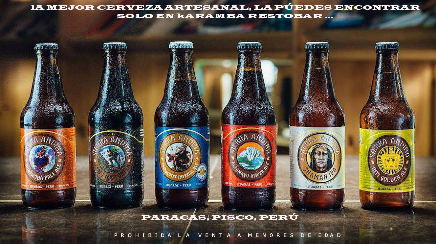

QUIENES SOMOS - "SIERRA ANDINA"
Ancash- Perú
Sierra Andina Outdoors es un matrimonio entre aventura, ricas cervezas y el reto personal! SAO es el hijo del amor de la famosa Cervecería Sierra Andina, la principal cervecería artesanal del Perú ubicada en el pueblo montañoso de Huaraz a 3100 metros. La cervecería siempre ha sido un hogar para superar los límites y probarse uno mismo. Tanto es así que, después de unos años de ofrecer eventos divertidos y desafiantes, decidimos ir a lo grande y hacer que superar los límites sea algo que podamos compartir más fácilmente con los demás. Aquí mismo en nuestro patio trasero.
Conocer MásCerveza Artesanal Sierra Andina
Ancash- Perú
Sierra Andina Outdoors es un matrimonio entre aventura, ricas cervezas y el reto personal! SAO es el hijo del amor de la famosa Cervecería Sierra Andina, la principal cervecería artesanal del Perú ubicada en el pueblo montañoso de Huaraz a 3100 metros. La cervecería siempre ha sido un hogar para superar los límites y probarse uno mismo. Tanto es así que, después de unos años de ofrecer eventos divertidos y desafiantes, decidimos ir a lo grande y hacer que superar los límites sea algo que podamos compartir más fácilmente con los demás. Aquí mismo en nuestro patio trasero.
Conocer Más